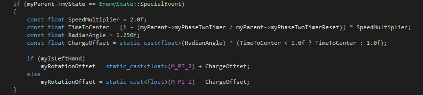

A Weapon Odyssey was my fourth project at the Game Assembly. The game is an "open world" adventure game that was created over eight weeks. The projects reference game was Enter the Gungeon.
"Crashed on an alien planet, a womans husband turns into a portable weapon. She must find out why this happened, and eliminate the source of evil to invert the spell."
My two main contributions to the game was the whole pipeline from Unity to Tga2D and the AI of the game. As I was responsible for the pipeline, I was able to create a structure of the levels in a way that would benefit my AI characters. The level designers would structure the levels into rooms, each having its own grid. This would make the AI:s pathfinding cheap as the grid would be fairly small. Also, as the dungeons were divided into rooms, only one room at a time needed to be updated.
The AI in the game was simple and didn't need any advanced structure. The base AI characters used a decision-tree checking distance and sight. The bosses used a "state-machine" for their phases, some more advanced than others.
The most fun part of coding was the last boss. In development name, "Spoony O'Juice aka Imperial Slim". The boss consisted of three phases, where the first phase was a chase sequence where the boss would shoot in intervals with its hands. Second phase was a blast phase where the boss would charge up and points it's hands to the middle and fire of a big ball, destroying objects in its path. The first and last phase would continue until 50% health.
The last phase the boss teleports to the center of the room, destroying all pillars. Switching between three weapons, the boss would shoot at the player until death.
The part where I had to work a lot on was the different positions of the bosses hands. Not only did I need to figure out which orientation they should be to draw the correct spritesheet, but I also needed to move the correctly around the boss. All the different attacks had different calculations for positioning, and I used a lot of magic numbers to make sure I finished in time. With NGC eating up several days, I accepted the ways of make it work.
The special event enum was the bosses 2nd phase attack. The enum was also used by the enemy base class to stop it's default behaviour, letting the sub class to the logic. This part of code is for the hands in with the phase 2 attack, where the boss would move its hands together infront and the blast off the "kamehameha" spell.
The bosses hands were floating to the sides of the boss unless there was an offset in their rotation.